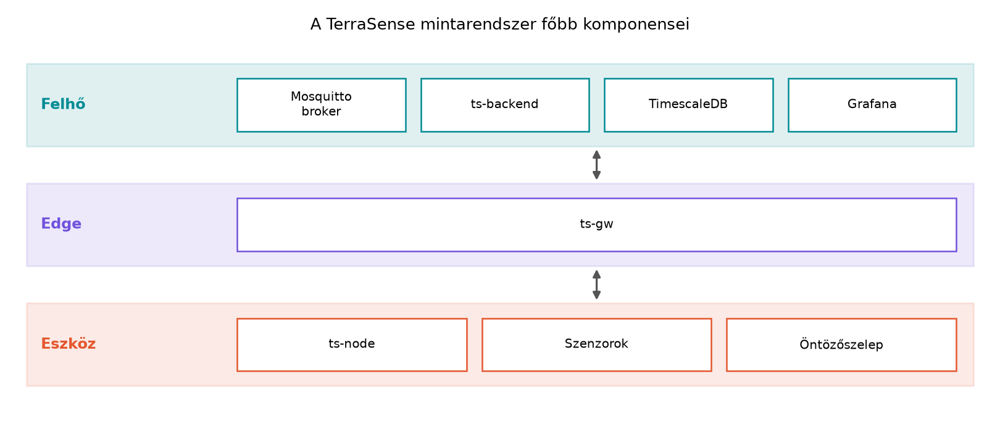

Egy IoT-rendszer szoftveres vertikuma sok programozó számára ismeretlen terület: a mikrovezérlőn futó, néhány KiB memóriában gazdálkodó firmware-től a felhőben futó, skálázódó backendig minden réteget más nyelv, más futásidő és más megbízhatósági modell jellemez. Ha valaki erős C/C++ és Linux-tudással rendelkezik, de még nem épített IoT-rendszert, akkor a legnagyobb kihívás nem a nyelvi szintaxis, hanem a rétegek közötti szemléletváltás: hogyan lesz egy RTOS-szálból kiolvasott szenzorértékből megbízhatóan tárolt idősoros adat, miközben az eszköz akár évekig elemről fut, és a hálózat időnként elérhetetlen.
Ez az alfejezet rögzíti, milyen előismeretekre épít a könyv, bemutatja a végigvitt mintarendszert, és ajánlott olvasási utakat ad, hogy mindenki a saját céljának megfelelő mélységben haladhasson.
A könyv feltételezi, hogy az olvasó programozóként dolgozik, és a következő területeken nem igényel alapozó magyarázatot:
malloc/free szemlélet, void * és
típuskonverzió.vector, map, string,
thread, mutex), kivételkezelés alapjai.Makefile vagy CMake alapú build, naplózás és hibakeresés
strace-szel vagy gdb-vel.Ha ezek közül valamelyik hiányzik, érdemes előbb pótolni, mert a könyv a C/C++/Linux fogalmakra rövid analógiákkal hivatkozik, és nem magyarázza el őket újra. A következő önellenőrző lista segít felmérni az erősségeket:
| Terület | Erős, ha például… | Gyenge, ha… |
|---|---|---|
| C bitműveletek | Gond nélkül ír reg |= (1 << 3) kifejezést |
Nem tudja egy bitmaszk hatását fejben kiértékelni |
| C++ RAII | lock_guard-ot vagy saját RAII-osztályt használ |
Destruktorban nem érti a felszabadítás sorrendjét |
| Linux socketek | Írt már TCP/UDP klienst vagy szervert | Csak elméletből ismeri a connect/bind
hívásokat |
| JEE fogalmak | Tudja, mi a JMS-üzenet és a JPA-entitás | A Java-nyelvet és a Jakarta EE-t is most látná először |
Ez a lista nem vizsga, hanem iránytű: ha valamelyik sorban bizonytalan, akkor a hozzá tartozó fejezetben érdemes lassabban haladni.
A fenti alapokra építve a könyv nulláról tanítja a következőket:
Ezeket a témákat mindig a TerraSense mintarendszer konkrét problémájához kötjük, így nem „lexikonként”, hanem működő rendszer építése közben sajátíthatók el.
Definíció. A TerraSense egy olyan, a könyvben végigvitt mintarendszer, amely egy üvegház klímáját és talaját figyeli, és a mért adatokból riasztásokat, vezérléseket és dashboardokat állít elő. Minden labor ennek egy darabját építi meg vagy bővíti.
A rendszer fő komponensei:

A rétegek és a hozzájuk tartozó komponensek:
ts-node nevű
szenzorcsomópont Zephyr RTOS alatt, C nyelven fut. Méri a hőmérsékletet
(°C), a relatív páratartalmat (%RH) és a talajnedvességet (%), valamint
egy öntözőszelepet vezérel. Elsődlegesen a Zephyr
native_sim célján fut, így valós hardver nélkül is
fejleszthető.ts-gw egy Linux-gateway,
C++17/20 és CMake használatával. Bemenete a szimulációban UDP, valós
hardveren BLE GATT; kimenete MQTT. Feladata a protokollfordítás, a
pufferelés és a biztonsági határ kijelölése.ts-backend Java 21 és Spring Boot
alapú backend, a PostgreSQL + TimescaleDB idősoros tárolás, valamint a
Grafana dashboard. A backend fogadja a telemetriát, REST API-t és
eszközárnyékot biztosít, parancsokat küld lefelé, és riasztásokat
generál.Az azonosítók és üzenetek konvencióit a könyv rögzíti: a site például
gh1 (üvegház), a node például n001; a
telemetria-üzenetben node_id, monoton seq
sorszám és ts eseményidő (UTC, epoch ms) szerepel. A
topicok a terrasense/<site>/<node>/... sémát
követik. Ezeket a konvenciókat az A TerraSense
mintarendszer architektúrája alfejezet véglegesíti, és a későbbi
laborok feltételezik.
A könyv hét fő részből áll, amelyek a teljes szoftveres vertikumot lefedik:
ts-gw C++-ban,
store-and-forward, üzemeltetés, edge-feldolgozás.Továbbvitt eredmény. Minden alfejezet laborja a
~/iot-labor/ könyvtárban, azon belül iNNN/
alkönyvtárban dolgozik. A közös futtatókörnyezet a
~/iot-labor/stack/compose.yaml fájlban gyűlik össze. Egy
alfejezet kimenete (kód, konfiguráció, konvenció, döntés)
továbbvitt eredménynek számít, ha egy későbbi alfejezet
arra épít. Ilyen például a TerraSense komponenslistája és
azonosítórendszere, amelyre minden labor hivatkozik: ezt az A TerraSense mintarendszer architektúrája alfejezet
rögzíti, a labor futtatókörnyezetét pedig a A labor
felállítása: Linux host, Docker, Zephyr, Mosquitto, Java alfejezet
állítja elő. A továbbvitt eredményeket a szöveg mindig kiemelten,
**Továbbvitt eredmény.** kezdetű bekezdésben mondja ki, és
a ### Rövid összefoglaló is felsorolja, így a későbbi
alfejezetek egyértelműen az előzményre hivatkozhatnak.
A laborok a következő szerkezetet követik:
~/iot-labor/
├── i004/
│ └── ... # a labor futtatókörnyezet felállításának fájljai
├── i009/
│ └── ... # az első Zephyr alkalmazás
├── i028/
│ └── ... # MQTT-kliens labor
└── stack/
└── compose.yaml # közös Docker Compose fájlMinden labor elején egy **Munkakönyvtár:** blokk adja
meg a pontos elérési utat, és a
mkdir -p ~/iot-labor/iNNN && cd ~/iot-labor/iNNN
parancsot. A korábbi labor fájljait explicit cp-vel vagy
relatív hivatkozással kell felhasználni, így a függőségek nyomon
követhetők maradnak.
A könyv többféleképpen olvasható, attól függően, hogy az olvasó melyik rétegre koncentrál.
| Olvasási út | Kinek ajánlott | Fő fejezetek | Elhagyható |
|---|---|---|---|
| Teljes út | Mindenki, aki a teljes vertikumot akarja érteni | I–VII. rész, sorrendben | — |
| Eszközoldali út | Beágyazott C/C++ fejlesztő, aki a firmware-re és az edge-re koncentrál | I., II., III. (MQTT-ig), IV. rész; a VI. részből a biztonsági alapok | V. rész (backend), kivéve az ingest fogalmát |
| Backend-oldali út | Java/backend fejlesztő, aki a felhőoldalt építi | I. rész; III. részből az MQTT és az adatformátumok; V. rész; VI. részből a biztonság és tesztelés | II. rész (mikrovezérlő) és IV. rész (gateway) mély technikai részei |
Az eszközoldali úton haladóknak is meg kell érteniük legalább a
MQTT-topicok és a telemetria-séma konvencióját, mert a firmware ezeket
állítja elő. A backend-oldali úton haladóknak pedig ismerniük kell a
native_sim korlátait, hogy a kapott adatok értelmezhetők
legyenek.
Minden alfejezet végén négy fokozatos feladat található: (a) fogalmi
vagy döntési kérdés, (b) számolási vagy tervezési feladat, (c)
implementációs feladat a TerraSense rendszerben, (d) hibakeresési vagy
kiterjesztési feladat. A feladatok megoldása a
### Megoldások részben teljes, indoklással ellátott választ
ad. Kód esetén a teljes releváns kódrészlet szerepel, nem csak a
kulcssorok.
A laborokban megadott Várt kimenet illusztratív: a
könyvgenerátor a kódot nem futtatja, így a kimenet a helyes működés
esetén várható tartalmat mutatja. Mért értékeket (késleltetés,
fogyasztás, hatótáv) a könyv csak akkor közöl, ha azok forrásból
származnak vagy „illusztratív” jelölést kapnak. A
native_sim időzítése és energiafogyasztása nem hardverhű,
ezért minden ilyen mérésnél a szöveg ezt jelzi.
ts-node szoftverét kell elkészítenie. A fenti
olvasási utak közül melyiket választaná, és mely fejezeteket tartaná
feltétlenül szükségesnek? Válaszát indokolja.~/iot-labor/ és benne a stack/
könyvtár. Ellenőrizze, hogy a mkdir -p parancs után a
ls -la ~/iot-labor/ a stack könyvtárat
mutatja.~/iot-labor/i004 könyvtárban létrehozott fájlokat a
következő laborok automatikusan megtalálják. Mi ezzel a probléma? Mit
kell tenni a helyes használathoz a Továbbvitt
eredmények elve szerint?A legnagyobb nehézséget a C pointerek és bitműveletek hiánya okozná, mert a mikrovezérlős fejezetek a regisztereket és a memóriát közvetlenül, pointerekkel és bitmaszkokkal érik el. RTOS-ismeret hiánya nem akadály, mert azt a könyv nulláról tanítja; a C++ hiánya a gateway-résznél, a Linux hiánya a laborok futtatásánál okozna gondot, de a legalapvetőbb az eszközrétegben a C-tudás.
Az eszközoldali út a megfelelő választás, mert a firmware-fejlesztőnek a II. rész (mikrovezérlő, RTOS, szenzorok) és a III. rész MQTT-részei a legfontosabbak. A IV. rész a gateway miatt hasznos, de a backend (V. rész) elhagyható, kivéve az ingest fogalmát, hogy tudja, milyen formában érkezik az adat a felhőbe. A VI. részből a biztonsági alapok szükségesek, mert a firmware-nek is biztonságosnak kell lennie.
A parancsok:
mkdir -p ~/iot-labor/stack
cd ~/iot-labor
ls -laA várt kimenetben a stack könyvtár látható.
cp-vel vagy relatív
hivatkozással kell a korábbi labor fájlját felhasználni. Ha ez elmarad,
a labor nem reprodukálható, és a továbbvitt eredmény függősége sérül. A
helyes gyakorlat: a **Munkakönyvtár:** blokkban megadott
cp parancsot futtatni, vagy a fájlra relatív elérési úttal
hivatkozni a saját iNNN/ könyvtárból.Ez az alfejezet rögzítette a könyv előismeret-feltételeit: erős C,
C++ és Linux-tudás, valamint JEE-ből csak fogalmi ismeret. Bemutatta a
TerraSense mintarendszert, amelynek komponensei: ts-node
(Zephyr, C), ts-gw (Linux-gateway, C++), Mosquitto broker,
ts-backend (Spring Boot), TimescaleDB és Grafana. A
rendszer azonosító- és topic-konvencióit az A
TerraSense mintarendszer architektúrája alfejezet véglegesíti. A
laborok a ~/iot-labor/iNNN/ könyvtárban, a közös
futtatókörnyezet a ~/iot-labor/stack/compose.yaml fájlban
található; a futtatókörnyezet felállítását a A labor
felállítása: Linux host, Docker, Zephyr, Mosquitto, Java alfejezet
írja le. A továbbvitt eredmények elve biztosítja, hogy minden labor a
korábbiak kimenetére épül. Ajánlott olvasási utak: teljes, eszközoldali
és backend-oldali.
Ez az alfejezet bevezető jellegű, nincs szükség külső forrásra. A technológiai verziók (Zephyr, Spring Boot, Mosquitto, Java) és a konkrét API-nevek a későbbi alfejezetekben, elsősorban a A labor felállítása: Linux host, Docker, Zephyr, Mosquitto, Java alfejezetben kerülnek pontosításra, ellenőrzési igénnyel. A szabályozási határidők és a hardverjellemzők a megfelelő szakaszoknál jelölt forrásokkal szerepelnek.